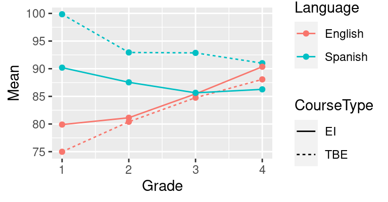

Chapter 5 Week 4: Line charts
5.1 Goals
- You’ll learn how to draw line charts in R. Line charts are a popular choice for visualising temporal developments, but they can be used for other purposes, too.
- You’ll also learn how to split up a complex graph into several simpler graphs. This technique is known as facetting or creating small multiples.
5.2 Tutorial
Line charts are a reasonable choice for presenting
the results of more complex studies. They’re often
used to depict temporal developments, but I don’t
think their use should be restricted to this. I often
use line charts to better understand complex results
that are presented in a table. For instance,
Slavin et al. (2011) (the text you read for Week 4)
presented their results in four tables
(Tables 4–7). I entered the results pertaining
to the PPVT (English) and TVIP (Spanish) post-tests
into a CSV file (Peabody_Slavin2011.csv):
Grade: Grades 1 through 4.CourseType: EI (English immersion) or TBE (transitional bilingual education).Language: English or Spanish.Learners: Number of learners per class, language and course type.Mean: Mean score per class, language and course type.StDev: Standard deviation per class, language and course type.
We can plot the development in the English and Spanish test scores for the two course types:
ggplot(data = slavin,
aes(x = Grade,
y = Mean,
colour = Language, # use different colours per language
linetype = CourseType)) + # use different line types per course type
geom_line() + # connect data points with a line
geom_point() # add data points as points for good measure
You should understand most of the R code above by now;
if you don’t, please refer to the previous tutorials.
What’s new is that you can specify more than just an
x and a y parameter in the aes() call.
When you associate colour and linetype with variables
in the dataset, the data associated with different levels
of these variables (i.e., English vs. Spanish; TBE vs. EI)
will be plotted in a different colour or using a different
line type. The colours and line types used here are ggplot’s
default choices; we could override those, but that’ll be for
some other time. The same goes for the appearance of the legends.
Using different colours and line types is all good and well
if you have a limited number of variables and a small number
of levels per variable. But for more complex data, such
graphs quickly become confusing. One useful technique
is to plot different lines in separate graphs (small multiples)
and show the different graphs side-by-side. This is known as facetting.
The command facet_grid() can be used to specify
the variables according to which the graph should be separated
and how (rows ~ columns).
Since the information regarding Language and CourseType
is expressed in the facets, we don’t have to express it using
colours and linetypes any more. (But feel free to do so
if you think it makes things clearer!)
ggplot(data = slavin,
aes(x = Grade,
y = Mean)) +
geom_line() +
geom_point() +
facet_grid(CourseType ~ Language) # TBE vs. EI in rows; Span. vs. Eng. in columnsOr you can combine facetting with using different colours or line types. In the next plot, the data for different languages are shown in separate panels, but each panel shows the data for both the TBE and EI pupils. This is particularly useful if we want to highlight differences (or similarities) between the TBE and EI pupils. If instead we wanted to highlight differences or similarities in the development of the pupils’ language skills in Spanish and English, we’d draw this graph the other way round. In addition to connecting the means with a line, this graph also visualises the means using a symbol in order to highlight that there were four discrete measurement times (i.e., no measurements between Grades 1 and 2).
ggplot(data = slavin,
aes(x = Grade,
y = Mean,
shape = CourseType, # different symbols by course type
linetype = CourseType)) +
geom_point() +
geom_line() +
facet_grid(. ~ Language) # only split graph by column (Sp. vs. Eng.)
Note the use of . ~ columns in facet_grid(). This
splits up the graph in different columns but not in different rows.
Brain-teaser: Why does the mean performance in Spanish get progressively worse as the children are getting older? (What’s the outcome variable, exactly?)
5.3 About facetting
You can also use facetting for other types of plots. I’m sure you fondly remember your scatterplot from the first tutorial; here it is again but the different species are shown in separate panels:
5.4 For those interested
For a longer example, see http://janhove.github.io/reporting/2016/06/13/drawing-a-linechart.
5.5 Exercise
The dataset MorphologicalCues.csv contains data stemming from a
learning task in which the participants had to associate a morphological
form with a syntactic function. 70 learners were randomly assigned to
one of three conditions (Condition):
RuleBasedInput: In this condition, the input showed a perfect association between the morphological form and the syntactic function.StrongBias: The input showed a strong, but imperfect association between form and function.WeakBias: The input showed a weak (but non-zero) association between form and function.
To track the learners’ progress throughout the task,
the learners took part in three sorts of exercises:
Comprehension, grammaticality judgement GJT and Production.
They did this at four stages during the data collection
(Block 1, 2, 3, 4), that is, after receiving a bit of input,
some more input, etc.
The column Accuracy shows the mean percentage of correct responses per Block, per Task and per Condition.
The research question: How does Accuracy develop in the course of the data collection depending
on the Task and Condition?
Your task: Plot these data so that the research question can be answered.
You will want to try out several graphs so that you can pick a graph that you
find most comprehensible. You can only hand in a single graph, though.
Save a graph you’re happy with
using ggsave(). Submit both your graph and the compiled HTML report.
References
Slavin, Robert E., Nancy Madden, Malgarita Calderón, Anne Chamberlain & Megan Hennessy. 2011. Reading and language outcomes of a multiyear randomized evaluation of transitional bilingual education. Educational Evaluation and Policy Analysis 33(1). 47–58. doi:10.3102/0162373711398127.